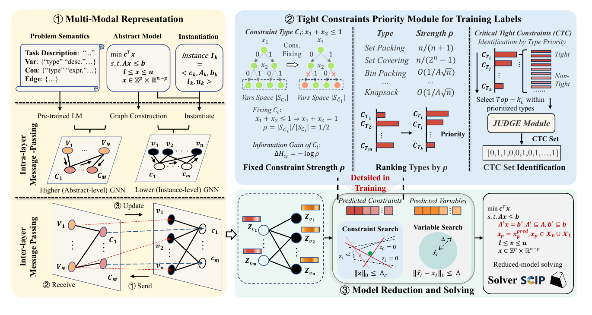

Constraint Matters: Multi-Modal Representation for Reducing Mixed-Integer Linear Programming
Constraint Matters extends learning-based MILP reduction from variables to constraints, using abstract problem semantics and instance structure to identify critical tight constraints and solve a smaller model.

The framework combines abstract semantics with instance structure, constructs labels for critical tight constraints, and jointly reduces constraints and variables before solver execution.
01 / Research question
Learning-based MILP reduction usually predicts values for a subset of variables and fixes them before solving. Yet variables and constraints jointly define the feasible region: converting a well-chosen inequality into an equality can also remove a large portion of the search space. This raises two coupled questions. Which tight constraints at the optimum are genuinely useful to fix without destroying feasibility, and how can a model recognize them across different instances when raw coefficient graphs do not explicitly encode the semantic category of each constraint?
02 / Approach
The method first treats tight inequalities at optimal training solutions as candidate critical constraints. An information-theoretic heuristic ranks constraint types by their estimated fixed-constraint strength: types that remove more local uncertainty receive higher priority, and a subset becomes the supervision target. For prediction, the paper builds two coupled bipartite graphs. The instance-level graph represents concrete variables, constraints, coefficients, bounds, and solver features; the abstract-level graph represents variable and constraint types from the shared mathematical formulation, initialized with text embeddings. Intra-layer message passing learns within each graph, while inter-layer message passing exchanges type-level and instance-level information. At inference, the network predicts both critical constraints and variable values. Selected inequalities are converted to controlled equality neighborhoods, predicted variables are restricted within a trust region, and SCIP or Gurobi solves the resulting reduced MILP.
03 / Research scope
The study evaluates capacitated allocation (CA), maximum independent set (MIS), minimum vertex cover (MVC), workforce allocation (WA), and the real-world Middle-Mile Consolidation Network (MMCN). Main comparisons use Gurobi 9.5.2 and SCIP 8.0.1 with an 800-second limit and report absolute primal gap and primal-dual integral over 100 test instances. Larger CA and MVC instances test scale generalization. The approach assumes that an abstract mathematical formulation and textual descriptions of its variable and constraint types are available, so benchmarks lacking this information cannot be used directly.
Experimental results
Four-dataset comparison with Gurobi and SCIP
| Method | CA · Gap | CA · PDI | MIS · Gap | MIS · PDI | MVC · Gap | MVC · PDI | WA · Gap | WA · PDI |
|---|---|---|---|---|---|---|---|---|
| Gurobi | 477.51 | 76.29 | 2.70 | 33.09 | 8.38 | 68.02 | 0.20 | 4.76 |
| PS + Gurobi | 210.19 | 73.78 | 0.04 | 0.69 | 0.28 | 7.39 | 0.07 | 4.97 |
| ConPaS + Gurobi | 197.36 | 73.75 | 0.02 | 0.71 | 0.10 | 7.64 | 0.10 | 4.97 |
| Constraint Matters + Gurobi | 104.72 | 73.02 | 0.00 | 0.47 | 0.00 | 6.26 | 0.06 | 4.40 |
| Improvement over Gurobi (%) | 77.06 | 4.22 | 100.00 | 98.58 | 100.00 | 90.80 | 70.00 | 7.56 |
| SCIP | 4005.99 | 190.18 | 4.16 | 103.91 | 12.42 | 140.89 | 2.60 | 37.06 |
| PS + SCIP | 3575.18 | 179.48 | 0.66 | 6.49 | 2.98 | 21.03 | 1.27 | 34.85 |
| ConPaS + SCIP | 3545.92 | 146.88 | 0.43 | 5.52 | 2.56 | 24.05 | 1.20 | 29.91 |
| Constraint Matters + SCIP | 3401.63 | 109.41 | 0.34 | 4.65 | 1.48 | 18.34 | 0.83 | 21.52 |
| Improvement over SCIP (%) | 15.08 | 42.47 | 91.83 | 95.52 | 88.08 | 86.98 | 68.08 | 41.93 |
This reproduces all rows of the paper's main Table 3. PS is Predict-and-Search; ConPaS is Contrastive Predict-and-Search. The two improvement rows compare the proposed method directly with the corresponding traditional solver, so their values are percentages rather than gap or PDI measurements.
Within the same 800-second budget, jointly restricting variables and informative tight constraints reduces both the final primal gap and the primal-dual integral across the displayed Gurobi and SCIP settings. The first reflects the quality of the final solution, and the second captures progress over the full solve. The gains on MIS and MVC show where tightening selected constraints alongside variable predictions can be particularly effective.
Generalization to larger instances
| Method | CA · Gap | CA · PDI | MVC · Gap | MVC · PDI |
|---|---|---|---|---|
| SCIP | 7009.58 | 198.78 | 22.07 | 228.21 |
| PS | 6541.87 | 169.86 | 4.07 | 39.63 |
| ConPaS | 6287.22 | 156.95 | 2.20 | 35.39 |
| Constraint Matters | 5955.86 | 131.44 | 0.55 | 24.54 |
The model remains strongest when evaluated on instances larger than those used for training. This supports the two-level representation: abstract variable and constraint types provide reusable context, while the instance graph still carries the concrete coefficients and scale of each new MILP.
Citation
@inproceedings{constraintmatters2026,
title = {{Constraint Matters: Multi-Modal Representation for Reducing Mixed-Integer Linear Programming}},
author = {Jiajun Li and Yixuan Li and Ran Hou and Yu Ding and Shisi Guan and Jiahui Duan and Xiongwei Han and Tao Zhong and Vincent Chau and Weiwei Wu and Zhiyuan Liu and Wanyuan Wang},
booktitle = {International Conference on Learning Representations},
year = {2026},
url = {https://openreview.net/forum?id=vqNg2Vl8o1}
}